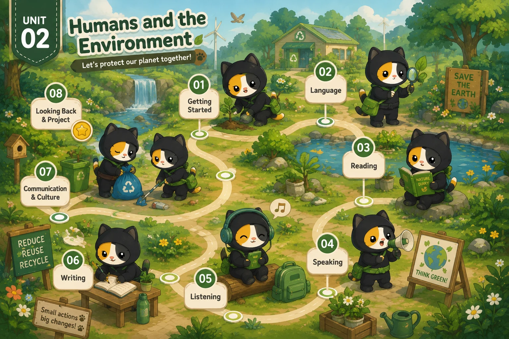

Lesson 1 · Getting started — Go Green Club Lesson 2 · Language — chưa có bài giảng Lesson 3 · Reading: Green living — chưa có bài giảng Lesson 4 · Speaking: Green living habits — chưa có bài giảng Lesson 5 · Listening: Go Green Weekend — chưa có bài giảng Lesson 6 · Writing: Ways to improve the environment — chưa có bài giảng Lesson 7 · Communication and Culture / CLIL — chưa có bài giảng Lesson 8 · Looking back and Project — chưa có bài giảngĐã dựng Lesson 1; bảy thẻ còn lại đang khoá. Dựng xong tiết nào thì mở khoá thẻ đó.